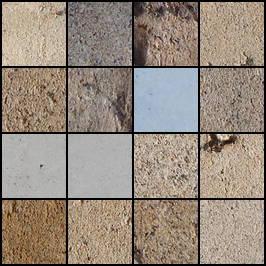

AIM
What this experiment was trying to learn
Can a compact unconditional diffusion model learn concrete surface appearance, and what does its output distribution reveal about the need for explicit crack conditioning?
TECH STACK
Implementation choices
PyTorch · DDPM · compact U-Net · AdamW · CUDA · RTX 4050
PROCEDURE
How it was run
Index SDNET2018 and retain cracked/non-cracked and surface metadata; resize RGB patches to 64 by 64 and normalize image tensors. Train SmallUNet to predict Gaussian noise using randomly sampled diffusion timesteps. Labels remain metadata and are not model inputs. Save the 50-epoch checkpoint and generate the existing unconditional evaluation collection using the historical sampler. Analyse all 1,000 saved images with the 64-pixel detector. Compute reference-summary deviations and a separate 160-real/160-generated feature diagnostic.
RESULT
What the evidence says
1,000 images evaluated. The morphology detector flags 77.1% as cracked. This is detector prevalence, not a ground-truth accuracy score.
OBSERVATIONS
What appeared in the outputs
The fixed heuristic responds to local dark structures, including texture, shadows and aggregate boundaries. Its large prevalence relative to the dataset label prior therefore supports a detector/distribution mismatch concern, not a claim that the model generates five times as many genuine cracks. The low continuity proxy (0.116) and increased contrast relative to reference summaries are consistent with fragmented or over-detected dark texture. They do not locate a uniquely identified model failure without independently labeled generated images.
ASSUMPTIONS
Decisions behind the result
Image-level labels: SDNET labels describe patch status; they are not pixel masks. Useful metadata, not supplied to the unconditional model. Resolution: 64-pixel resizing retains enough texture for a baseline. Thin fissures may disappear or merge; results do not establish topology preservation. Prior comparison: Dataset labels and a generated-image heuristic measure comparable crack presence. Unverified; their 15.13% and 77.10% rates use different label sources. Reference statistics: Differences from reference mean luminance/contrast describe distributional deviation. They are not paired reconstruction errors against a correct target image.
ERRORS & SOURCES OF ERROR
What could mislead us
Geometry-based labels and detectors are proxies. Historical checkpoint exposure, small or unequal sample sizes, differing fidelity implementations and domain shifts limit interpretation. See the research audit for the corrected protocol.
CONCLUSION
Research takeaway
Experiment 1 establishes an unconditional synthesis baseline and its reproducible checkpoint. It does not establish a controllable crack generator. Its main research value is to motivate explicit conditioning and to expose how texture-sensitive detectors can distort crack-prevalence interpretation.
RESULT IMAGES
Generated outputs

CURRENT EVALUATION ADDENDUM
Measured results and their limits
1,000 images evaluated. The morphology detector flags 77.1% as cracked. This is detector prevalence, not a ground-truth accuracy score.
Inspect the metric record · Research protocol and readiness

Fidelity scores in historical reports used differing reference samples or implementations. They are not a controlled cross-experiment leaderboard. New clean training and independent validation remain outstanding.
FULL REPORT CONTENT
Technical record
Current research report · Revised 22 November 2026. Methods, results, assumptions and validation limits are presented in full below.
Experiment 1 Research Report
Unconditional concrete surface synthesis at 64 by 64 pixels
Revision: 2026-11-22. Study type: retrospective computational experiment. Historical checkpoint and saved evaluation; prospective validation is identified separately.
Abstract
A compact unconditional DDPM provides a baseline for generating concrete surface patches without a crack-status input. Fifty logged training epochs end at noise-prediction MSE 0.015996. A later analysis of 1,000 saved outputs flags 771 images as cracked using a fixed image heuristic. This 77.10% detector prevalence is not an independently labeled crack rate and cannot be directly equated with the 15.13% cracked-label prevalence in the training manifest. The experiment demonstrates executable surface synthesis, while controlled crack generation and engineering validity remain unestablished.
1. Aim and research question
Can a compact unconditional diffusion model learn concrete surface appearance, and what does its output distribution reveal about the need for explicit crack conditioning?
A model trained on the mixed image distribution can synthesize concrete-like texture. Because no condition is supplied, this experiment cannot test requested crack-class compliance.
2. Technical stack and model specification
| Item | Specification and provenance |
|---|---|
| Image shape | 64 by 64 RGB |
| Denoiser | SmallUNet |
| Checkpoint tensor parameters | 3,258,115 |
| Image / conditioning channels | 3 RGB; no class input |
| Requested categories | 1 |
| Completed logged epochs | 50 |
| Final logged noise MSE | 0.015996154 |
| Minimum logged training MSE | 0.015782894 at local epoch 46 |
| Learning rate | 0.0002 (checkpoint optimizer) |
| Batch size provenance | Trainer default 64; historical command-line arguments not fully captured |
| Software | Python, PyTorch, torchvision, NumPy, Pillow, SciPy; Matplotlib and metric dependencies for evaluation |
| Optimizer | AdamW; beta values 0.9 and 0.999; weight decay 0.01 (saved optimizer where available, otherwise source defaults) |
| Gradient norm clipping | 1.0 in trainer source |
| Precision policy | Current historical trainer enables CUDA autocast and GradScaler; exact historical execution precision is not independently logged |
| Class dropout | Not used in the binary/unconditional source trainers |
| Sampling | 1,000-step ancestral DDPM for the shared pretrained reproduction path |
| Checkpoint selection | Released phase-final checkpoint; no independently held-out selection record |
| Augmentation | Image normalization; external data addition in Exp3, not a verified geometric augmentation benefit |
Epoch numbering in checkpoints is zero-based for Experiments 1–3 and one-based for the later phases; the training log is used to establish the completed phase length. A low training loss is not evidence of held-out generalization. Exact historical CUDA/PyTorch versions, CLI arguments and original peak resource measurements are not fully captured, so later environment checks are not substituted for historical runtime provenance.
3. Dataset composition and provenance
| Historical source | Training-manifest records |
|---|---|
| SDNET2018 | 50,482 |
| Historical label | Records |
|---|---|
| non_cracked | 42,846 |
| cracked | 7,636 |
Total historical training records: 50,482. Source: train.csv. These are processed patches, not counts of independent structures or photographs. Labels for the morphology/mechanism-inspired experiments are derived by image-geometry rules. The historical train/reference design and transfer ancestry do not establish independent holdout performance. Source image identities, alias grouping and current qualified manifests are discussed in Section 10.
Dataset references: SDNET2018 [R6].
4. Mathematical and implementation basis
For normalized image $x_0$, the implemented forward process uses $T=1000$ and a linear variance schedule from $10^{-4}$ to $0.02$. With $\alpha_t=1-\beta_t$ and $\bar{\alpha}_t=\prod_{s=1}^{t}\alpha_s$:
$$x_t=\sqrt{\bar{\alpha}_t}x_0+\sqrt{1-\bar{\alpha}_t}\epsilon,\qquad \epsilon\sim\mathcal{N}(0,I).$$
The denoiser minimizes noise-prediction mean squared error (the expression suppresses constant normalization by the number of image elements):
$$\mathcal{L}=\mathbb{E}_{x_0,t,\epsilon}\left[\lVert\epsilon-\epsilon_\theta(x_t,t,c)\rVert_2^2\right].$$
The condition $c$ is omitted for the unconditional model. This objective is implemented in the diffusion and training modules and follows the DDPM formulation [R1]. Training MSE is an optimization diagnostic, not a perceptual, topology or physical-validity score.
5. Experimental procedure
- Index SDNET2018 and retain cracked/non-cracked and surface metadata; resize RGB patches to 64 by 64 and normalize image tensors.
- Train SmallUNet to predict Gaussian noise using randomly sampled diffusion timesteps. Labels remain metadata and are not model inputs.
- Save the 50-epoch checkpoint and generate the existing unconditional evaluation collection using the historical sampler.
- Analyse all 1,000 saved images with the 64-pixel detector. Compute reference-summary deviations and a separate 160-real/160-generated feature diagnostic.
These steps reconstruct the procedure supported by saved artifacts and current source. Defaults are distinguished from observed checkpoint/log values; a missing historical execution configuration is not silently reconstructed as a verified run command.
6. Evaluation protocol and statistical interpretation
The primary morphology source is src/evaluate_exp1_2_3_errors.py. At 64 pixels it applies local-background subtraction with window 11, darkness threshold 13.5, minimum component area 6 pixels and nominal span threshold 11 pixels. The 128-pixel path additionally applies a 2 by 2 opening. Component counts, image-axis orientation and local contrast are detector outputs, not physical measurements.
The later fidelity diagnostic uses torchvision Inception-v3 with its classifier removed, 299-pixel resizing and ImageNet normalization. It selects training-manifest references: 160 real and 160 generated images for the stored score. KID uses 100 subsets of up to 128 feature vectors and a cubic polynomial kernel. This custom feature/preprocessing protocol is not interchangeable with a standard torch-fidelity run or the earlier torchmetrics feature-64 scores. The KID standard deviation describes subset variability, not a confidence interval over independent training runs.
Wilson 95% intervals summarize binomial counting uncertainty conditional on the saved generator and heuristic. They do not include training-seed variability, detector bias, source clustering or uncertainty about real mechanisms. Precision, recall and F1 computed against requested conditions quantify heuristic correspondence, not human-labeled classification accuracy. Pixel distances are in image coordinates; no physical millimetre scale is available.
For $k$ accepted outputs among $n$ requests, $\hat p=k/n$ and $z=1.95996$. The Wilson interval is
$$\frac{\hat p+z^2/(2n)\ \pm\ z\sqrt{\hat p(1-\hat p)/n+z^2/(4n^2)}}{1+z^2/n}.$$
7. Results
| Measurement | Saved result | Interpretation |
|---|---|---|
| Generated heuristic crack detections | 771 / 1,000 (77.10%) | Detector prevalence; Wilson 95% interval 74.39–79.60% |
| Historical training label prior | 15.13% | Different label source; not a detector-calibrated reference |
| Mean continuity proxy | 0.116 | Largest-component statistic; depends on mask extraction |
| Generated / reference luminance mean | 147.8 / 163.67 | Intensity units, not physical surface reflectance |
| Generated / reference contrast summary | 23.15 / 11.07 | Image intensity standard deviation |
| Luminance deviation MAE / RMSE | 20.24 / 30.75 | Deviation from a reference summary; not a paired reconstruction |
Protocol-qualified feature diagnostic
| Saved metric | Value |
|---|---|
| frechet_inception_distance | 128.886 |
| kernel_inception_distance_mean | 0.12193 |
| kernel_inception_distance_std | 0.00596 |
| evaluated_fake_samples | 160 |
| evaluated_real_samples | 160 |
FID and KID summarize feature distributions [R4, R5]; they do not certify crack presence or physical validity. Reference exposure, sample count, feature extraction and image preprocessing are part of the metric definition. Do not rank this value against experiments using another implementation or a different reference distribution.
Earlier report values belong to src/evaluate_metrics.py, which uses torchmetrics feature dimension 64 after resizing inputs to 64 pixels and index-paired AlexNet LPIPS [R11]. The later primary error-analysis score uses a different feature/preprocessing/reference path. Index-paired LPIPS on unpaired generated and real images is a distance diagnostic, not reconstruction fidelity. Earlier low FID values must not be combined with the later protocol as one trend. The pre-revision record is retained in the report archive.
Earlier report values, quoted as recorded rather than recomputed:
| Generated group | Feature-64 FID | Feature-64 KID mean | KID subset SD | Index-paired LPIPS |
|---|---|---|---|---|
| Unconditional | 5.604571 | 3.419779 | 1.028021 | 0.548679 |
These values belong to the earlier technical record; original sample identities and execution configuration are incompletely captured. They are not substituted for the later primary diagnostic.
Saved plots and generated examples
Figure interpretation: phase-local training loss, detector-defined rates and saved sample counts. This figure is a descriptive summary, not a controlled leaderboard or an independently labeled accuracy assessment.
The raw training log contains an additional numeric epoch-1 record and an embedded header. The current report uses the last numeric record for each epoch; the source log and all overwritten report versions are preserved.
Archived illustrative outputs
The following saved illustrations retain their available filenames and request labels. Their membership in the quantified collection is not assumed without an original sampling manifest. They are not a blinded quality study, and their labels are not independent human judgments. The quantitative tables retain the complete stated evaluation denominators.
Generated concrete surface. Source illustration: exp1_seed42.png.
8. Observations and discussion
The fixed heuristic responds to local dark structures, including texture, shadows and aggregate boundaries. Its large prevalence relative to the dataset label prior therefore supports a detector/distribution mismatch concern, not a claim that the model generates five times as many genuine cracks. The low continuity proxy (0.116) and increased contrast relative to reference summaries are consistent with fragmented or over-detected dark texture. They do not locate a uniquely identified model failure without independently labeled generated images.
This experiment changes several design factors relative to other phases. Resolution, training images, label taxonomy, transfer ancestry, color processing, sampler and evaluator may differ. A before/after visual comparison is therefore hypothesis-generating; no causal attribution to a single architectural or conditioning change is made.
9. Assumptions and their consequences
| Assumption | Implementation or rationale | Consequence and validation status |
|---|---|---|
| Image-level labels | SDNET labels describe patch status; they are not pixel masks. | Useful metadata, not supplied to the unconditional model. |
| Resolution | 64-pixel resizing retains enough texture for a baseline. | Thin fissures may disappear or merge; results do not establish topology preservation. |
| Prior comparison | Dataset labels and a generated-image heuristic measure comparable crack presence. | Unverified; their 15.13% and 77.10% rates use different label sources. |
| Reference statistics | Differences from reference mean luminance/contrast describe distributional deviation. | They are not paired reconstruction errors against a correct target image. |
All image-derived labels assume that visible dark geometry is informative about the intended visual attribute. Real masks, bounding boxes and class labels answer different annotation questions. Additional annotations or a mechanics-inspired name do not independently verify a failure mechanism.
10. Completed audits and prospective validation
The prospective research_v5 manifests contain the following base partition counts. They were constructed after the historical training and do not retroactively make its checkpoints unseen-data models.
| Partition | Base records |
|---|---|
| train | 43,846 |
| validation | 6,606 |
| test | 5,640 |
The shared source audit covers 67,264 originals, with 65,866 distinct decoded RGB images and 1,398 extra exact decoded copies. The v4 perceptual screen found 386 cross-split candidates. V5 conservatively links all 1,111 candidate pairs, including within-split pairs, before assignment; the same pHash ≤3 and dHash ≤6 search then finds zero cross-split candidates. This limited, uncalibrated screen can miss crops, rotations, flips and larger edits. Source names and zero screened matches do not prove site or structure independence.
Scratch training, EMA selection on fixed-noise validation, provenance-checked generation and geometry/fidelity preflight are implemented for the new lineage. Their bounded smoke runs are infrastructure checks. Full clean multi-seed training, independently labeled generated images, external validation and downstream detector utility have not been established by the historical artifacts. A prepared campaign is not a completed experiment.
Computational sharing was tested in a fresh Windows/Python 3.10 CPU environment: the public weights were downloaded and verified and one image per experiment was generated without raw datasets. This confirms that inference can execute under that environment; it does not reproduce model training or validate image quality.
11. Sources of error and errors identified
| Identified issue | Correction or interpretation |
|---|---|
| Earlier FID 5.604571 presented alongside later FID 128.886 | Different feature dimensions, reference choices and preprocessing are used; keep both protocols separate. |
| Detector prevalence treated as genuine crack correctness | There is no requested class and no generated-image ground truth. |
| Repeated epoch 1 and an embedded CSV header | Use the last numeric record per epoch for the report; preserve the raw log. |
Further threats include segmentation sensitivity to texture and illumination; source overlap and patch clustering; heuristic circularity between curation and evaluation; small or unequal sample budgets; image-derived versus procedurally generated conditioning; reference preprocessing differences; and incomplete historical execution metadata. No structural safety, real crack width, downstream detection benefit, state-of-the-art performance or physical-cause accuracy is claimed from these measurements.
12. Conclusion
Experiment 1 establishes an unconditional synthesis baseline and its reproducible checkpoint. It does not establish a controllable crack generator. Its main research value is to motivate explicit conditioning and to expose how texture-sensitive detectors can distort crack-prevalence interpretation.
13. Reproducibility and artifact record
The released historical weights are used for inference; these commands do not start training. Run from the repository root with the documented dependencies and a fresh output directory.
.\.venv\Scripts\python.exe pipeline/download_models.py
.\.venv\Scripts\python.exe pipeline/checkpoints.py verify
.\.venv\Scripts\python.exe pipeline/generate_cracks.py --experiment 1 --crack-type all --count 1 --seed 2026 --output-dir experiments/unconditional_ddpm/report_replication_seed2026
A fixed seed requires matching checkpoints, sampling settings, device and software for comparable execution; it does not guarantee cross-device pixel identity or exact replication of a historical example grid. Research training uses a separate scratch lineage and must not overwrite these final weights.
| Evidence | Artifact |
|---|---|
| Primary metric record | EVALUATION_METRICS.json |
| Training log | training_loss.csv |
| Checkpoint SHA256 | 55fac363939c270cfb4d6e9c4e9dc645a1407b3749f9acb5611477d5f9dd2e9a |
| Input hashes and revision archive | report_evidence.json |
| Training source | train.py |
| Evaluation source | evaluate_exp1_2_3_errors.py |
Code is available in the project repository. The six historical checkpoints are distributed in the versioned model release, with a checksum manifest. Raw datasets are not included in that inference bundle. Dataset references identify their publishers, while local source inventories record observed archive hashes and outstanding identity/annotation limitations.
The machine-readable evidence file records input SHA256 values, checkpoint metadata, log handling and exact archived pre-revision sources. The historical reports remain recoverable and are superseded where their claims conflict with the corrected tables above. Original sampling files do not provide a complete checkpoint-hash chain for every historical evaluation image; association with the released phase checkpoint follows the available procedural record. No new generation, training or rerun of image-evaluation algorithms is implied by this revision. Counts, Wilson intervals and derived matrix statistics are calculated from saved artifacts.
14. References
[R1] Ho, Jain and Abbeel (2020). Denoising Diffusion Probabilistic Models. Source
[R4] Heusel et al. (2017). FID proposal in GANs Trained by a Two Time-Scale Update Rule Converge to a Local Nash Equilibrium. Source
[R5] Bińkowski et al. (2018). Demystifying MMD GANs; KID proposal. Source
[R6] SDNET2018 dataset and acquisition documentation. Source
[R11] Zhang et al. (2018). The Unreasonable Effectiveness of Deep Features as a Perceptual Metric; LPIPS. Source
Archival report: the earlier interpretation may contain superseded claims. The current research report takes precedence.
Read the earlier archived technical record
Experiment 1 Full Report: Unconditional DDPM for Concrete Surface Image Generation
1. Experiment Identity
Experiment name: Unconditional DDPM for Concrete Surface Image Generation
Experiment number: Experiment 1
Experiment type: Baseline generative image modeling
Dataset: SDNET2018
Resolution: 64 x 64 RGB
Model: SmallUNet unconditional DDPM
Training duration: 50 epochs
Project root:
D:\Downloads\concrete_ddpm
Experiment directory:
D:\Downloads\concrete_ddpm\experiments\unconditional_ddpm
Final checkpoint:
D:\Downloads\concrete_ddpm\experiments\unconditional_ddpm\checkpoints\ddpm_epoch_050.pt
Generated evaluation images:
D:\Downloads\concrete_ddpm\experiments\unconditional_ddpm\outputs\evaluation\unconditional_epoch_050
2. Aim of the Experiment
The aim of Experiment 1 was to train a diffusion model that can generate new concrete surface image patches from random noise. The model was trained without any explicit crack-status condition. This means the model was not told whether an image was cracked or non-cracked during generation. Instead, it learned the overall visual distribution of concrete surface patches from the full SDNET2018 training dataset.
The main goals were:
- To establish a baseline generative model for concrete surface images.
- To test whether a compact DDPM can learn realistic concrete texture at 64 x 64 resolution.
- To measure the general similarity between generated images and real validation images.
- To identify the limitations of unconditional generation for concrete crack synthesis.
- To create a reference point for later conditional experiments.
This experiment is important because every later improvement needs a baseline. Without an unconditional baseline, it would be difficult to know whether a conditional model, a higher-resolution model, or an augmented-data model is genuinely better.
3. Background and Theory
3.1 Generative Modeling
Generative modeling is a machine-learning approach where the model learns the probability distribution of a dataset and then produces new samples that resemble the original data. In this project, the samples are concrete surface image patches.
For a concrete crack project, generative modeling is useful because it may help produce additional image examples for inspection, data augmentation, model testing, and research into crack-image synthesis. However, simply generating concrete-like texture is not the same as generating meaningful crack images. This distinction is central to Experiment 1.
3.2 Diffusion Models
A diffusion model learns to generate images by reversing a gradual noising process.
The forward process starts with a real image and adds Gaussian noise over many steps until the image becomes nearly pure noise. The reverse process trains a neural network to remove noise step by step. During generation, the model starts from random noise and repeatedly denoises it until an image appears.
The main idea is:
real image -> progressively noisier image -> pure noise
pure noise -> learned denoising steps -> generated image
The model does not generate the full image in one step. It learns a sequence of small denoising operations.
3.3 DDPM
DDPM stands for Denoising Diffusion Probabilistic Model. It is one of the classical diffusion-model formulations.
In this experiment, the DDPM used 1,000 diffusion steps. During training, a random timestep was selected, noise was added to an image according to that timestep, and the neural network was trained to predict the noise that had been added.
The training target was therefore not the clean image directly. The model learned to predict Gaussian noise. Once the model can predict noise well, it can be used in reverse to gradually remove noise from a random starting image.
3.4 Why Use a U-Net?
A U-Net is commonly used in image-to-image and diffusion tasks because it combines local detail with broader spatial context.
The encoder part reduces image resolution and learns higher-level structure. The decoder part reconstructs spatial detail. Skip connections help preserve low-level texture information. This is especially useful for concrete images because the model needs to learn fine surface roughness, aggregate patterns, stains, edges, and possible crack-like structures.
The SmallUNet used here is compact, with 3,258,115 parameters. This size was appropriate for the available GPU and for 64 x 64 image generation.
3.5 Unconditional Generation
An unconditional model generates images without receiving a class label, text prompt, mask, or other control signal. It learns the entire training distribution as one mixed distribution.
In this experiment, cracked and non-cracked images were both included in the training data, but their labels were not supplied to the model as generation conditions.
This matters because the model cannot be instructed to generate:
cracked concrete
or:
non-cracked concrete
It only learns:
concrete surface image
As a result, the generated output may sometimes contain crack-like features, but there is no mechanism to control crack presence.
4. Necessity of Each Major Step
4.1 Dataset Indexing
The SDNET2018 dataset contains concrete images from multiple surface categories. Indexing was necessary to create a structured list of image paths and metadata.
Without indexing, the training code would not have a reliable way to know which files belong to the dataset, how many images are available, or how to separate training and validation data.
4.2 Train/Validation Splitting
The dataset was split into training and validation sets:
Training images: 50,482
Validation images: 5,610
Total indexed: 56,092
The training set was used to optimize the DDPM. The validation set was held back for comparison during evaluation.
This step was necessary because evaluating generated images against the same images used for training would make the results less trustworthy. A separate validation set gives a better estimate of how well the generated image distribution matches unseen real data.
4.3 Image Preprocessing
Images were processed into a consistent format:
64 x 64 RGB
This was necessary because neural networks require uniform tensor dimensions within a batch. The 64 x 64 resolution was chosen as a practical first baseline because it reduces GPU memory demand and training time.
The tradeoff is that thin cracks may become less visible after resizing. This limitation is important for crack-generation work.
4.4 Preserving Labels as Metadata
Labels such as cracked and non-cracked were preserved in the dataset metadata but were not supplied to the unconditional DDPM.
This was necessary because Experiment 1 was designed specifically as an unconditional baseline. The purpose was to test whether the model could learn the overall concrete image distribution without class control.
The consequence is that the model cannot be directly evaluated as a controlled crack generator.
4.5 Model Training
Training was necessary so the SmallUNet could learn to predict noise at different diffusion timesteps. The model was trained for 50 epochs using mean squared error between the actual Gaussian noise and the predicted noise.
The final logged training loss was:
0.01599615436508108
This indicates that the model learned the denoising objective. However, training loss alone is not enough to judge generated image quality. A model can have a low denoising loss and still produce images with visual artifacts or weak crack detail.
4.6 Checkpointing
Checkpoints were saved during training, with the final checkpoint stored at:
checkpoints\ddpm_epoch_050.pt
Checkpointing was necessary because training is computationally expensive. It allows the experiment to be resumed, sampled, evaluated, and compared without retraining from the beginning.
4.7 Sample Generation
Sample grids were generated after training:
outputs\samples\samples_epoch_050_seed_42.png
outputs\samples\samples_epoch_050_seed_123.png
outputs\samples\samples_epoch_050_seed_999.png
This step was necessary for initial qualitative inspection. Different seeds produce different generated samples from the same trained model. Multiple seeds help reveal whether the model is diverse or whether it repeatedly produces similar images.
4.8 Formal Evaluation Set Generation
A larger generated evaluation set of 1,000 images was created:
outputs\evaluation\unconditional_epoch_050
This step was necessary because formal metrics such as FID, KID, and LPIPS are not meaningful from a tiny sample grid. A larger sample set gives a more stable comparison with real validation images.
4.9 Quantitative Metric Evaluation
The generated set was compared with 1,000 real validation images using FID, KID, and paired LPIPS.
This was necessary to measure general image-distribution similarity. These metrics help answer whether generated images resemble real concrete images in a broad statistical sense.
However, these metrics do not directly answer whether cracks are present, realistic, or structurally meaningful.
4.10 Manual Audit Preparation
A manual audit grid and CSV template were created:
outputs\audit\unconditional_epoch_050_audit_grid_first_64.png
outputs\audit\unconditional_epoch_050_manual_audit_first_64.csv
This step was necessary because no automatic metric in the current Experiment 1 pipeline reliably measures visible crack presence. Human visual review is currently the most trustworthy way to assess whether generated samples contain plausible cracks.
5. Dataset Description
The experiment used SDNET2018, a concrete crack image dataset containing images from three surface categories:
bridge_deck
pavement
wall
The processed dataset paths were:
data\processed\train\
data\processed\validation\
data\processed\train.csv
data\processed\validation.csv
The total indexed dataset contained 56,092 images:
Training images: 50,482
Validation images: 5,610
The dataset contains both cracked and non-cracked concrete patches. For Experiment 1, these labels were not used as conditioning inputs.
6. Model Configuration
The model was a compact U-Net used inside a DDPM framework.
Configuration:
Architecture: compact U-Net DDPM
Parameters: 3,258,115
Image size: 64 x 64 RGB
Diffusion steps: 1,000
Loss: mean squared error between true noise and predicted noise
Optimizer: AdamW
Training epochs: 50
GPU: NVIDIA GeForce RTX 4050 Laptop GPU
The model learned to predict noise at different diffusion timesteps. During generation, the trained model was used to gradually denoise random Gaussian noise into concrete-like image patches.
7. Training Procedure
The training process followed the standard DDPM objective:
- Load a real training image.
- Randomly choose a diffusion timestep.
- Add Gaussian noise to the image according to that timestep.
- Ask the U-Net to predict the noise.
- Compare predicted noise with actual noise using mean squared error.
- Backpropagate the loss.
- Update the model parameters using AdamW.
- Repeat for 50 epochs.
The final logged loss was:
0.01599615436508108
This shows that the model successfully optimized the denoising objective. The low loss supports the conclusion that the network learned meaningful denoising behavior, but it does not by itself prove that crack structures are realistic.
8. Generated Outputs
The model produced sample grids and a full evaluation set.
Sample grids:
outputs\samples\samples_epoch_050_seed_42.png
outputs\samples\samples_epoch_050_seed_123.png
outputs\samples\samples_epoch_050_seed_999.png
Evaluation images:
outputs\evaluation\unconditional_epoch_050
The evaluation folder contains 1,000 generated PNG images.
These outputs represent the learned unconditional distribution of concrete-like surface patches.
9. Evaluation Metrics
9.1 FID
FID means Fréchet Inception Distance. It compares the distribution of generated images with the distribution of real images using deep image features.
Experiment 1 result:
FID: 5.604571
Lower FID is better. This result indicates that the generated images are close to the real validation images in general feature distribution.
However, FID does not measure crack correctness. A model can achieve a good FID by generating realistic concrete texture even if it rarely generates clear cracks.
9.2 KID
KID means Kernel Inception Distance. It is another distribution-comparison metric based on deep features.
Experiment 1 result:
KID mean: 3.419779
KID std: 1.028021
The mean gives the average distance estimate. The standard deviation shows how much the estimate varies across repeated subsets.
Lower KID is better. As with FID, KID measures general similarity, not crack-specific correctness.
9.3 Paired LPIPS
LPIPS means Learned Perceptual Image Patch Similarity. It estimates perceptual difference using neural-network features.
Experiment 1 result:
Paired LPIPS mean: 0.548679
Lower LPIPS means paired images are more perceptually similar. In this unconditional experiment, the pairing does not mean that each generated image is supposed to reconstruct a specific real image. Therefore, LPIPS should be interpreted as a perceptual-distance diagnostic rather than a reconstruction score.
9.4 Lightweight Diagnostic Proxies
Additional lightweight diagnostics were calculated on 2026-09-24 using 1,000 generated images and the first 1,000 validation images:
Generated images: 1000
Real comparison images: 1000
Generated mean pixel value: 0.5682
Real mean pixel value: 0.6330
Generated pixel std: 0.1513
Real pixel std: 0.1117
Mean pairwise generated distance: 20.5188
Mean nearest-real pixel distance: 11.1758
These are not formal generative-model metrics. They are sanity checks.
The generated mean pixel value was lower than the real mean pixel value. This suggests that the generated images were darker on average than the real validation sample.
The generated pixel standard deviation was higher than the real pixel standard deviation. This suggests that the generated images had more contrast or variation than the real comparison set.
The mean pairwise generated distance gives a rough diversity signal among generated samples. The mean nearest-real pixel distance gives a crude indication of how close generated images are to real images in raw pixel space.
These diagnostics should not replace FID, KID, LPIPS, or human evaluation.
10. Observations
The generated images show that the model learned several important visual properties of concrete surfaces:
- Concrete-like color distribution.
- Aggregate texture.
- Surface roughness.
- Patch-level variation.
- Some darker streaks or local structures that may appear crack-like.
The strongest observation is that the model successfully learned the general appearance of concrete patches.
The main weakness is crack control. Because the model is unconditional, it cannot be asked to generate cracked images specifically. Crack visibility is therefore inconsistent.
Another important observation is the limitation caused by 64 x 64 resolution. Thin cracks may be lost, blurred, or merged into general surface texture. This limits the usefulness of Experiment 1 for crack-specific generation.
11. Results Summary
Training result:
Final logged training loss: 0.01599615436508108
Formal evaluation:
FID: 5.604571
KID mean: 3.419779
KID std: 1.028021
Paired LPIPS mean: 0.548679
Lightweight diagnostics:
Generated mean pixel value: 0.5682
Real mean pixel value: 0.6330
Generated pixel std: 0.1513
Real pixel std: 0.1117
Mean pairwise generated distance: 20.5188
Mean nearest-real pixel distance: 11.1758
Qualitative result:
The model learned realistic concrete-like texture, but crack visibility was inconsistent.
12. Discussion
Experiment 1 achieved its primary purpose as a baseline. It demonstrated that a compact DDPM can learn the general distribution of SDNET2018 concrete image patches at 64 x 64 resolution.
The quantitative metrics indicate that the generated images are broadly similar to real validation images. The FID value is reasonably low, suggesting that the generated set is close to the real set in deep feature space. KID and LPIPS provide additional evidence of distributional and perceptual similarity.
However, the experiment also shows why unconditional generation is insufficient for controlled crack synthesis. Since the model receives no crack-status input, it has no way to separate cracked and non-cracked modes of the dataset. It may generate crack-like images occasionally, but it cannot be directed to do so.
This matters for practical use. In concrete inspection or crack-detection data augmentation, the important question is not only whether an image looks like concrete. The important question is whether the generated image contains a visible, plausible, useful crack. Experiment 1 does not yet answer that question.
The experiment also highlights the weakness of relying only on FID, KID, and LPIPS. These metrics are useful for general image quality but not enough for engineering validity. A realistic concrete texture without a crack could score well even if the goal is crack generation.
Therefore, the correct interpretation is:
Experiment 1 is a successful unconditional concrete-texture baseline, not a controlled crack-generation model.
13. Limitations
The main limitations are:
- No crack-status conditioning was used.
- The model cannot be instructed to generate cracked or non-cracked concrete.
- Crack-presence rate has not yet been measured reliably.
- FID, KID, and LPIPS do not evaluate crack correctness.
- 64 x 64 resolution may remove or blur thin crack details.
- The model was trained on patch-level images, not full structural scenes.
- Generated images may look realistic statistically while still being weak for engineering interpretation.
- The manual audit CSV is currently only a blank template until reviewed by a human.
14. Necessity of Visual Evaluation
Visual evaluation is necessary because crack generation is a semantic and structural problem, not only a texture-similarity problem.
For this project, human review should measure:
visible_crack: yes / no / uncertain
texture_quality: good / acceptable / poor
artifact_level: none / minor / severe
engineering_plausibility: plausible / questionable / implausible
The current audit files are:
outputs\audit\unconditional_epoch_050_audit_grid_first_64.png
outputs\audit\unconditional_epoch_050_manual_audit_first_64.csv
The first visual audit should answer:
- How many generated images contain visible crack-like structures?
- How many generated images have acceptable concrete texture?
- How many generated images contain obvious artifacts?
- Are crack-like patterns clear cracks or just surface noise?
This visual audit would convert the current qualitative observation into a measurable result.
15. Conclusion
Experiment 1 successfully trained an unconditional DDPM baseline for concrete surface image generation using SDNET2018 at 64 x 64 resolution.
The model learned the general visual distribution of concrete patches, including surface color, roughness, and aggregate-like texture. The final training loss was low, and the generated images achieved a formal FID score of 5.604571 against real validation images.
The experiment confirms that diffusion modeling is suitable for concrete texture generation. However, it also confirms that unconditional generation is not enough for controlled crack synthesis. Since the model was not conditioned on crack status, crack visibility is inconsistent and cannot be controlled.
The most important conclusion is:
Experiment 1 should be treated as a concrete-image baseline, not as the final crack-generation solution.
The next necessary step for Experiment 1 is a manual visual audit of generated samples. For controlled crack generation, conditional or mask-conditioned diffusion models are more appropriate.
16. Recommended Next Steps
Recommended Experiment 1 continuation:
- Manually annotate the first 64 generated images using the existing audit CSV.
- Expand the manual audit to 100 or 200 generated images if a more stable crack-rate estimate is needed.
- Summarize visible crack rate, usable texture rate, and artifact rate.
- Add the completed visual-audit result to
STATUS.md. - Use the result as the unconditional baseline when comparing against conditional experiments.
Recommended project continuation:
- Compare Experiment 1 against Experiment 2 for crack-control improvement.
- Complete large-scale evaluation for Experiment 3.
- Develop a stronger crack-presence evaluator before relying on automatic crack-rate metrics.
- Consider mask-conditioned diffusion if the goal is location-controlled crack synthesis.
17. Important Files
Status file:
D:\Downloads\concrete_ddpm\experiments\unconditional_ddpm\STATUS.md
Final checkpoint:
D:\Downloads\concrete_ddpm\experiments\unconditional_ddpm\checkpoints\ddpm_epoch_050.pt
Training log:
D:\Downloads\concrete_ddpm\experiments\unconditional_ddpm\logs\training_loss.csv
Sample grids:
D:\Downloads\concrete_ddpm\experiments\unconditional_ddpm\outputs\samples\samples_epoch_050_seed_42.png
D:\Downloads\concrete_ddpm\experiments\unconditional_ddpm\outputs\samples\samples_epoch_050_seed_123.png
D:\Downloads\concrete_ddpm\experiments\unconditional_ddpm\outputs\samples\samples_epoch_050_seed_999.png
Evaluation images:
D:\Downloads\concrete_ddpm\experiments\unconditional_ddpm\outputs\evaluation\unconditional_epoch_050
Lightweight diagnostics:
D:\Downloads\concrete_ddpm\experiments\unconditional_ddpm\outputs\evaluation\unconditional_epoch_050_lightweight_diagnostics.txt
Manual audit files:
D:\Downloads\concrete_ddpm\experiments\unconditional_ddpm\outputs\audit\unconditional_epoch_050_audit_grid_first_64.png
D:\Downloads\concrete_ddpm\experiments\unconditional_ddpm\outputs\audit\unconditional_epoch_050_manual_audit_first_64.csv
Shared source files:
D:\Downloads\concrete_ddpm\src\model.py
D:\Downloads\concrete_ddpm\src\diffusion.py
D:\Downloads\concrete_ddpm\src\train.py
D:\Downloads\concrete_ddpm\src\sample.py
D:\Downloads\concrete_ddpm\src\generate_eval_set.py
D:\Downloads\concrete_ddpm\src\evaluate_metrics.py